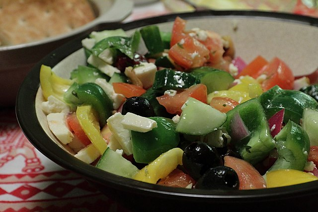

Greek Salad

Description
Usually olives and feta cheese is already salad!
But for the real mediterranean feeling a few more ingredients make sense.
- Prep Time
- 20 mins
- Total
- 20 mins
- Servings
- 6
Ingredients
- 1 head romaine lettuce - rinsed, dried and chopped
- 1 cucumber, sliced
- 2 large tomatoes, chopped
- 1 can pitted black olives
- 1 green bell pepper, chopped
- 1 red bell pepper, chopped
- 1 red onion, thinly sliced
- 1 cup crumbled feta cheese
- 6 tablespoons olive oil
- 1 lemon, juiced
- 1 teaspoon dried oregano
- ground black pepper to taste
Steps
-
Combine romaine, cucumber, tomatoes, olives, bell peppers and red onion
in a large bowl; sprinkle with feta cheese.
-
Whisk olive oil, lemon juice, oregano and black pepper together in a small bowl.
Pour dressing over salad, toss well to combine and serve.
Back to recipe selection